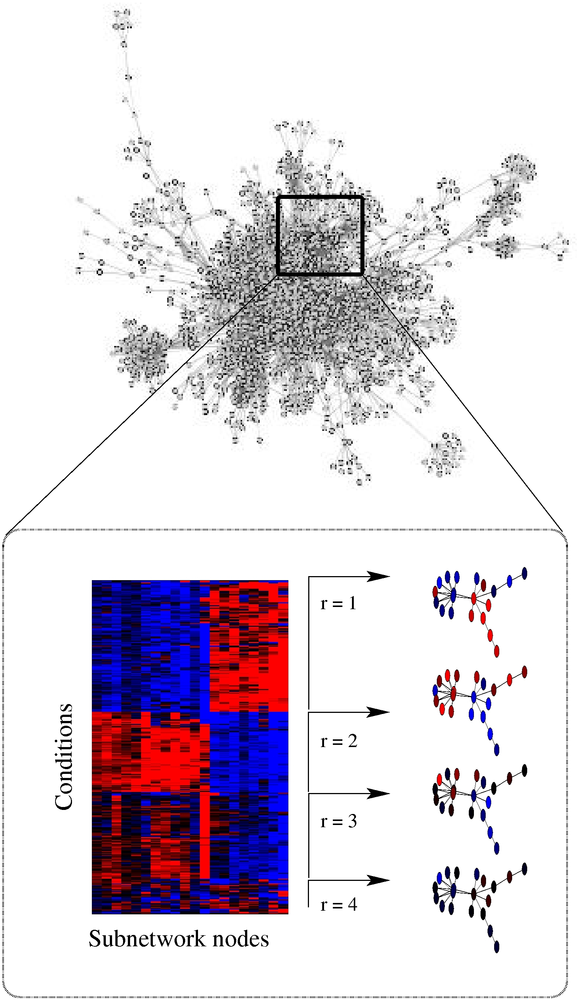

|
Leo Lahti*¹, Olli-Pekka Huovilainen, and António Gusmão
(1) Department of Information and Computer Science, Aalto University, Finland The R/BioC package contains also an implementation of variational Dirichlet process Gaussian mixture model (Kurihara et al., 2007). Your feedback and contributions are welcome. See the project page at BioConductor, or contact project admin. |
 |
Software & DocumentationThe applicability of the models has been demonstrated by case studies in computational biology, to investigate transcriptional activity in genome-scale pathway networks across normal human body.
|
Background
Techniques for model-based network analysis are implemented in R, an open source environment for statistical computing. The implementations are based on probabilistic models and variational learning. The probabilistic framework deals rigorously with the uncertainties associated with small sample sizes, and allows incorporation of prior information in the analysis. |